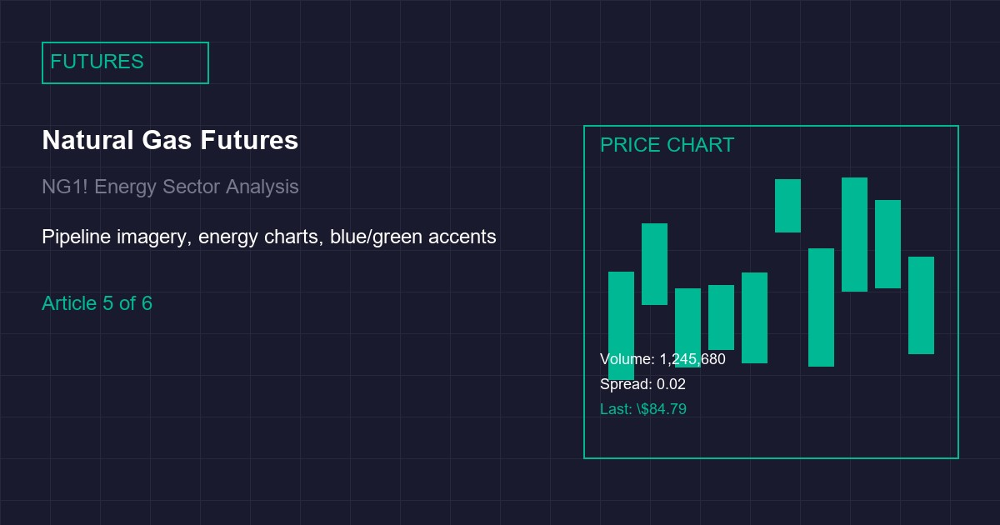

Soybean Futures: Weather-Driven Volatility in the 2026 Growing Season
Soybean futures on the Chicago Board of Trade closed at $13.85 per bushel on June 28, 2026, representing a 3.2% increase from the previous week as drought conditions across the US Midwest intensify and Brazilian planting delays compound supply concerns for the 2026/27 marketing year. The price surge has pushed the soybean market into backwardation, with the nearby July contract trading at a premium to the September and December contracts, signaling tight near-term supplies and heightened weather risk as the critical growing season progresses.
The weather-driven volatility in soybean futures is primarily driven by deteriorating soil moisture conditions across the key growing regions of Iowa, Illinois, and Indiana. As of June 25, 2026, soil moisture levels in these three states average 42% of field capacity, compared to the historical average of 68% for this time of year. The USDA's Crop Progress report released on June 23 showed that 58% of the soybean crop was rated good-to-excellent, down from 67% the previous week and 72% at the same time last year. The rapid deterioration in crop conditions has prompted analysts to revise their yield forecasts downward, with the average projected yield now at 49.2 bushels per acre, compared to 51.8 bushels per acre projected in May.
The Brazilian soybean crop, which accounts for approximately 38% of global exports, is also facing challenges. Planting progress in Mato Grosso, Brazil's largest soybean-producing state, is running 8% behind the historical average due to delayed rainfall patterns. The Brazilian agricultural agency CONAB has revised its 2026/27 production forecast to 142 million metric tons, down from 148 million metric tons projected in April. This reduction, combined with the US crop concerns, has tightened the global supply outlook significantly. The USDA's latest WASDE report projects global soybean ending stocks at 98.5 million metric tons for the 2026/27 marketing year, down 12% from the previous forecast and the lowest level since 2014.
From a technical analysis perspective, the soybean market has entered a critical phase. The July contract's settlement at $13.85 represents a break above the $13.50 resistance level that had contained prices for the past six weeks. The next significant resistance is at $14.50 per bushel, which corresponds to the contract high from April 2026. Support levels are at $13.20 and $12.80, with a break below $12.80 potentially signaling a return to the bear market trend that dominated the first quarter of 2026. The moving average convergence divergence (MACD) has crossed above its signal line, confirming bullish momentum, while the RSI has risen to 68.5, approaching overbought territory.
Weather Pattern Analysis and Growing Season Outlook
The current weather pattern affecting the US soybean belt is characterized by a persistent high-pressure ridge over the central Plains, creating a blocking pattern that has prevented normal precipitation cycles. This ridge, which has been in place since mid-June, is forecast to persist through early July according to the European Centre for Medium-Range Weather Forecasts (ECMWF) ensemble models. The implications for soybean crops are significant, as the critical pod-filling stage occurs in July and August, and moisture stress during this period can reduce yields by 15-25% depending on severity and duration.
Temperature forecasts for the next two weeks show above-average readings across Iowa and Illinois, with maximum temperatures projected to reach 92-95 degrees Fahrenheit, compared to the historical average of 84 degrees for late June. The combination of high temperatures and low soil moisture creates a stressful environment for soybean plants, particularly during the flowering and pod-setting stages. The USDA's Agricultural Weather and Crop Assessment model indicates that approximately 34% of the soybean acreage in the key growing states is currently under moderate to severe drought conditions, with the most severe impacts in western Illinois and eastern Iowa.
Global Supply Chain and Export Dynamics
The global soybean supply chain is experiencing significant tightening as both US and Brazilian production forecasts decline. China, which accounts for 62% of global soybean imports, has been actively sourcing cargoes from both origins, driving up freight rates and creating port congestion in both the US Gulf and Brazilian ports. The Shanghai International Port Container Line (SIPCL) index for soybean freight from the US Gulf to China has risen to $42.50 per metric ton, up 18% from the previous month, reflecting the increased competition for shipping capacity.
Argentina, the world's third-largest soybean exporter, has also been affected by weather conditions, with drought in the Pampas region reducing the 2025/26 harvest to 42.5 million metric tons, down from the initial forecast of 48 million metric tons. This reduction has further tightened the global supply picture, with the International Grains Council projecting a 4.2% year-over-year decline in global soybean exports for the 2026 calendar year. The tightening supply situation has also impacted soybean meal prices, which have risen to $485 per ton, up 8.7% from the previous month, creating cost pressures for livestock producers globally.
Trading Strategies and Risk Management
For futures traders and risk managers, the current soybean market presents a challenging environment with elevated volatility and uncertain weather-driven outcomes. The backwardation structure of the forward curve, with a 3.2% carry from July to September, creates opportunities for short-term traders but increases the cost of carry for long positions. Options market data shows that implied volatility for soybean options has risen to 32.5%, up from 26.8% in May, reflecting heightened uncertainty about the growing season outcome.
For end-users and producers, the current price levels present both challenges and opportunities. Livestock producers face higher feed costs, with soybean meal prices at $485 per ton, but the elevated futures prices provide attractive hedging opportunities through the purchase of put options or the establishment of forward sales contracts. For farmers, the current price levels above $13.50 per bushel represent attractive selling opportunities, particularly given the weather-related production risks. However, the potential for further price increases if weather conditions deteriorate further suggests that a portion of the crop should be retained for future sale at potentially higher prices.
In conclusion, the soybean futures market at $13.85 per bushel reflects genuine supply concerns driven by adverse weather conditions in both the US and Brazil. The backwardation structure, elevated implied volatility, and tightening global supply outlook suggest that weather-driven volatility will remain a dominant theme through the 2026/27 marketing year. Market participants should maintain flexible positioning and consider both technical and fundamental factors when making trading decisions in this challenging environment.
Related Futures Trading Reports

Copper Futures at $3.52/lb: Supply Chain Stress Signals

Natural Gas Futures: Storage Builds and Summer Cooling
